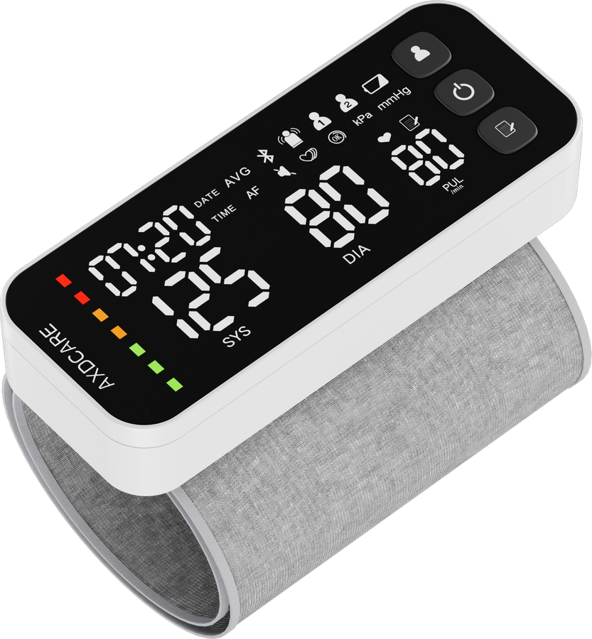
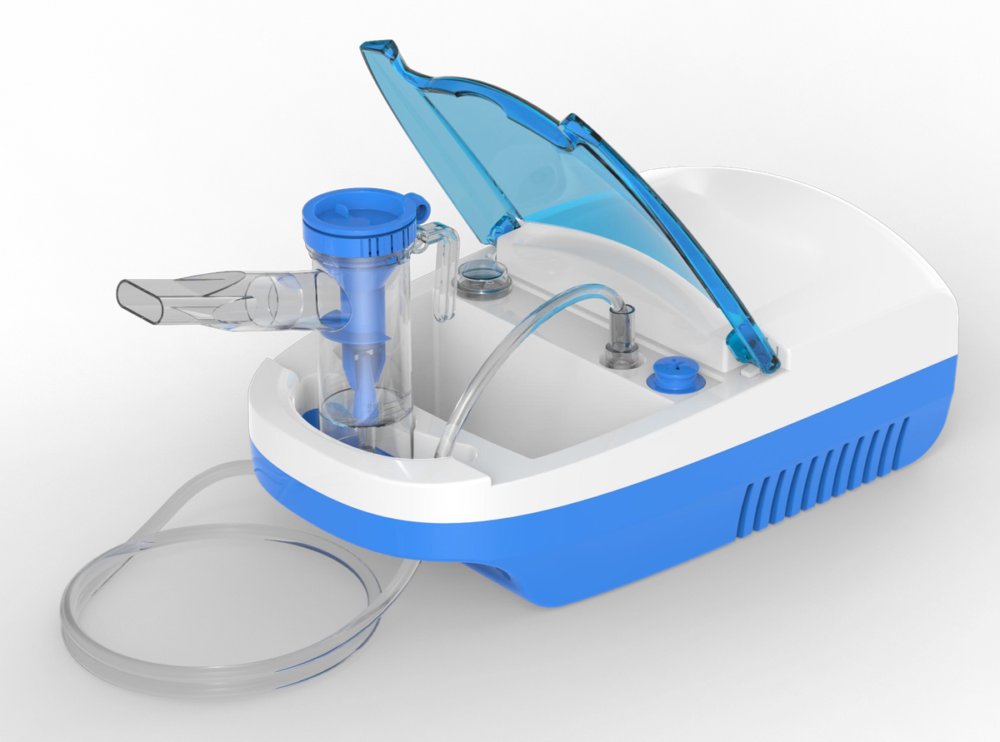
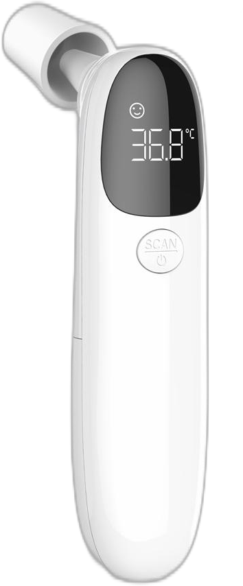
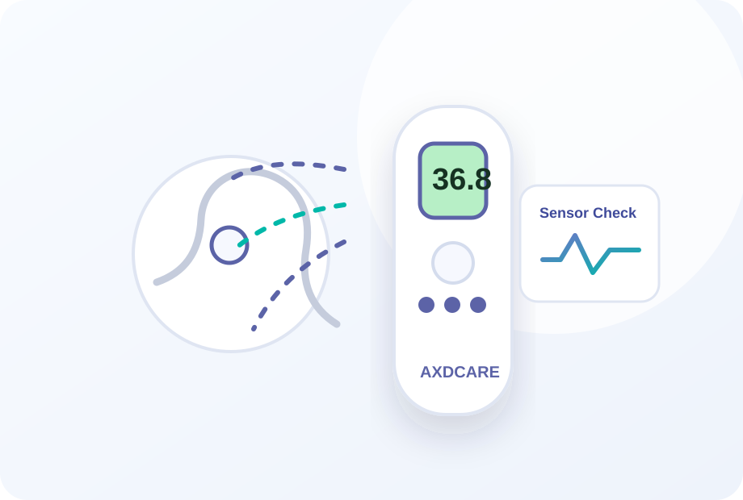

Product Technologies for Home Healthcare Devices
Explore AXDCARE product technology across blood pressure monitors, nebulizers and infrared thermometers. This section helps distributors, importers and healthcare brands understand product features, application value, model differences and OEM-ready options.


IHB Cuff Memory
Blood Pressure Monitor Features
Monitoring Technology for Daily Health Data Review
AXDCARE blood pressure monitor programs can be planned around practical user-facing features such as irregular heartbeat indication, cuff fit guidance, body movement indication, memory records and Bluetooth model options.
Explore Monitoring Technology
Respiratory Care Features
Mesh, Compressor and Portable Nebulizer Options
The nebulizer category can be presented by model type, portability, power method, accessory set, package plan and buyer channel. This makes it easier for distributors to compare product lines before requesting samples.
Explore Nebulizer Technology


IR LCD Alert
Temperature Measurement Features
Infrared and Digital Thermometer Product Planning
Thermometer technology content should help buyers understand product type, non-contact measurement, display experience, fever indicator options, memory review and packaging requirements for target markets.
Explore Thermometer TechnologyTechnology Built Around Real Product Features
Each technology area now connects product benefits, model types, inspection points and buyer use cases, so overseas customers can evaluate the product line before starting an OEM/ODM discussion.
Product Technology Directory
Use these pages as website content, SEO landing support and exhibition-ready sales material when explaining AXDCARE product features to professional buyers.
 Blood Pressure Monitor Technology
Feature planning, cuff options, digital platform direction and OEM packaging support.
Blood Pressure Monitor Technology
Feature planning, cuff options, digital platform direction and OEM packaging support.
 Nebulizer Technology
Mesh nebulizer, compressor nebulizer, accessory review and respiratory care OEM options.
Nebulizer Technology
Mesh nebulizer, compressor nebulizer, accessory review and respiratory care OEM options.

Infrared Thermometer Technology Non-contact thermometer product planning, private label design and buyer documentation. Quality Validation
Requirement review, sample confirmation, production control and shipment inspection.
Quality Validation
Requirement review, sample confirmation, production control and shipment inspection.
Monitoring Technology
Blood Pressure Monitor OEM Platform
Support upper arm, wrist, digital and Bluetooth blood pressure monitor projects with specification-led model selection for distributors and private label brands.
- Cuff fit, body movement and irregular heartbeat feature options
- Display, memory, Type-C and Bluetooth configuration discussion
- Logo printing, color matching, package and manual customization
- Specification review for pharmacy, retail and distribution channels
Respiratory Care Technology
Mesh & Compressor Nebulizer Development
AXDCARE helps buyers compare nebulizer formats, portability, power options, packaging plans and target-market requirements before mass production.
- Mesh nebulizer, handheld nebulizer and compressor nebulizer model options
- Portable product planning for pharmacy and home healthcare channels
- Private label design, retail box layout and distributor-ready carton labels
- Sample confirmation workflow before larger OEM/ODM orders
Temperature Measurement
Infrared Thermometer Product Engineering
Build non-contact forehead thermometer and digital thermometer programs with practical feature planning for importers, brand owners and healthcare wholesalers.
- Forehead, non-contact and digital thermometer product options
- Display, button layout, color and package customization support
- Buyer documentation organized for procurement and market review
- Export-ready product positioning for global distribution channels
Quality & Manufacturing Control
A technology page should not only talk about features. For B2B medical device buyers, trust comes from repeatable production, inspection records and clear communication before shipment.
Confirm model, target market, expected quantity, branding and documentation needs.
Prepare sample review, package direction and technical specification confirmation.
Manage incoming materials, assembly checkpoints and in-process quality review.
Check appearance, function, package, labeling and shipment documentation before delivery.
OEM/ODM Technical Discussion
Get OEM Quote
Need a Product Technology Plan for Your Brand?
Send AXDCARE your product category, market, quantity, certification concern and branding needs. Our team will help you choose a suitable model and project path.